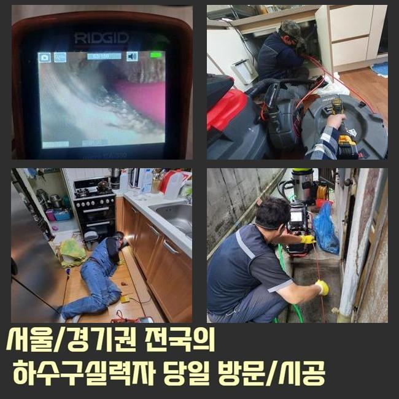
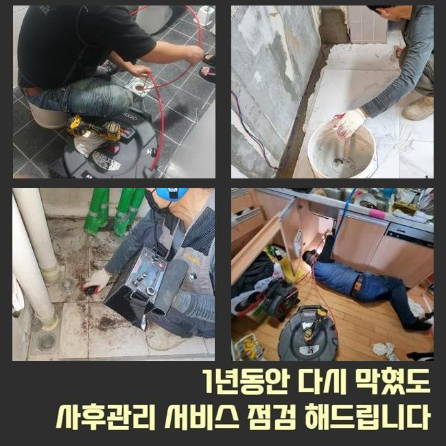
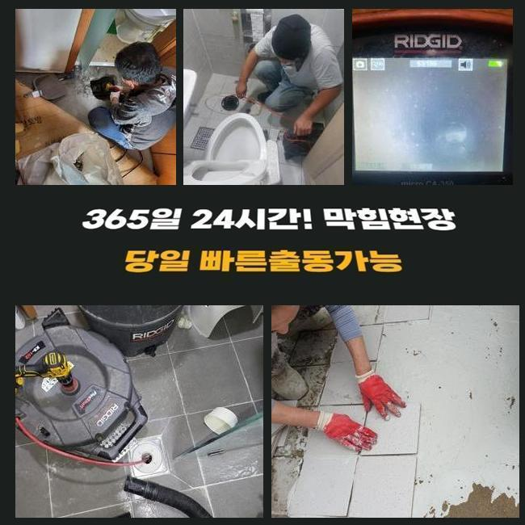
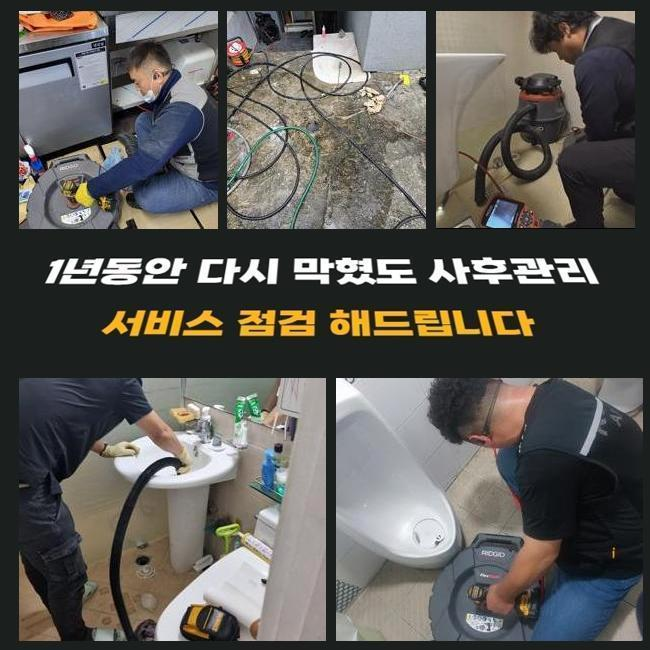
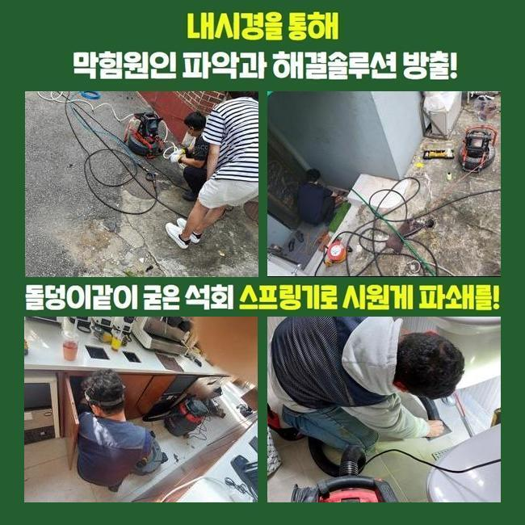
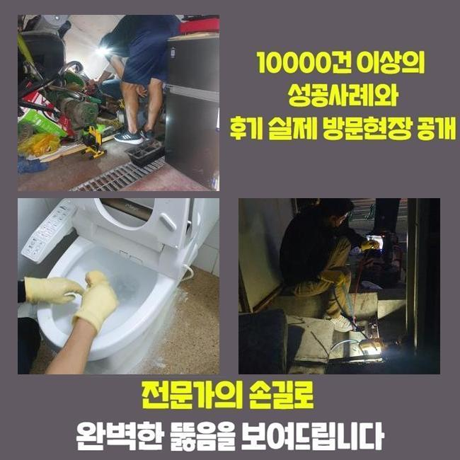
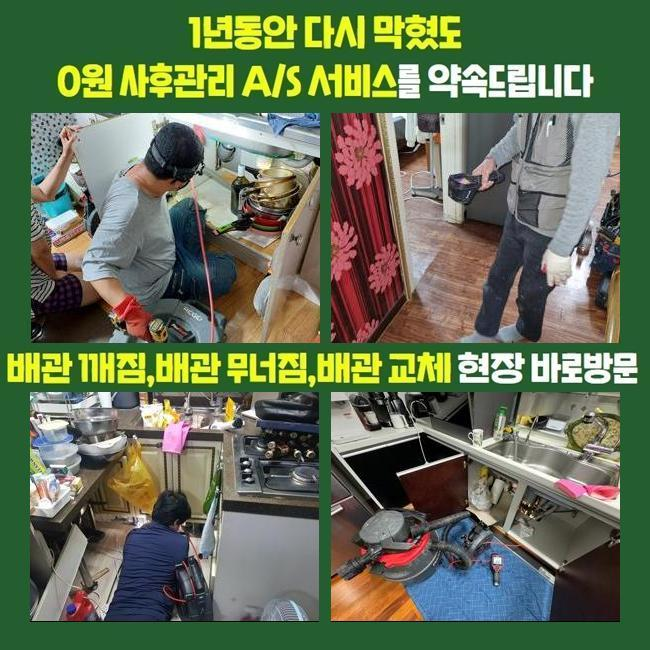

🏠 수원 구운동오수관뚫음 곡반정동 하수구뚫는업체 배관전문
수원 곡반정동 싱크대막힘 전문 시공 후기

📋 작업 개요
- 위치: 수원 곡반정동, 곡반정동, 수원
- 서비스 유형: 싱크대막힘, 변기막힘, 하수구막힘, 배관막힘, 누수수리, 역류해결, 뚫는업체, 배관청소, 고압세척
- 작업 일시: 2025. 1. 31. 21:24
- 업체명: 하수구수사대 (010-5615-2118)
🔍 문제 상황
수원 구운동오수관뚫음 곡반정동 하수구뚫는업체 배관전문
하수도에 물이 안 흘러가면 극심한 불편감을 경험하게 됩니다
가장 흔한 사건이라 함은 부엌 안의 싱크대가 틀어막혀버려서 계속 물이 차오르는 경우도 있으며 변기 장치나 세탁실 아래가 막혀버려서 이용에서의 어려움이 벌어지기도 합니다
아파트 현장에서 요청이 들어온다면 세대 내 배관이 막힌 것이니 실내에서 각종 기계들을 적용해서 해결을 보고 있습니다
공통적으로 사용하는 관로라면 아파트 단지 차원에서는 사전 검사를 받고 정기적으로 정화작업을 시행하므로 여기가 다치는 것은 비교적 흔치 않아요
하지만 상가라면 이런 막힘이 생겨날 경우의 수가 높다고 할 수 있습니다
오늘 소개할 곳은 상가 건물 속에 있는 메인관이 봉쇄돼서 성업 중인 매장들의 설비들이 다 중단되어서 문제 요인을 찾아달라며 전화를 주신 것이었습니다
자세한 내막을 보니 오류가 있다는 게 감지된 메인 배수로가 있는 장소가 파악돼서 진행을 시작했습니다
이 설비에 장애가 생기면 집들에 설치되어 있는 작은 관로의 문제로 단정 짓기는 어려우며 너비가 넓은 메인관로에 변형이나 마모가 생겼거나 방해물질들이 곳곳에 껴서 배수장치가 불량할 상황일 때가 많습니다

🔎 원인 분석
💡 전문가 진단: 정밀 진단 장비를 사용하여 슬러지의 고착 여부를 판명하고 타격/세척 작업을 실시했습니다.
물이 수렴해서 흘러가는 배수로부터 뚫기 시작하여 다음은 미세한 배관까지 처리하게 됩니다
천장 내부에 감춰진 배관 통로였기에 사다리를 타고 올라가서 작업을 실시하기로 계획하고 꽉 막힌 하수도 막힘 복구에 이로운 장비를 구상하여 가져갔습니다
위쪽만 관통한다고 해도 심층부 영역까지는 나아지지 않은 상태라 메인 파이프를 관리할 때에는 파이프라인 전체를 빠짐없이 정리해줘야 합니다
파이프캡을 열고 간격이 충분한지 보고 작업을 할 수 있는 작업 환경을 만듭니다
배관 용도로 만들어진 내시경기로 어두워서 잘 보이지 않는 내부 현황을 관찰하기 시작했어요
어떤 곳이 오염됐는지 특정 구간에 막혀있을 이유가 무엇인지 시공에 뛰어들기 전 알아내야 작업 방향을 정립할 수 있게 됩니다
메인배관 쪽 오류는 파이프의 사이즈가 폭 넓은 형태라서 일반적인 거주지에 찾아갔을 때 주로 구동하게 되는 석션으로는 수습이 힘들어요
연결부의 길이가 바닥까지 내려가지 못하므로 찌꺼기를 모으기엔 집수통이 모자라요
뭉친 오물을 파쇄해서 정화 작업을 효과적으로 도맡는 플렉스샤프트 장비 단시간만에 완료되지 않으며 구멍도 많이 뚫어야 해서 해결책이 될 것 같진 않았어요

🔧 작업 과정
상가 내에서 활용하는 하수구 통수과정이 이뤄지지 못하면 빠른 세정에 들어가서 시스템 복구를 해줘야 합니다
넓은 곳에는 고압수를 통해 여기저기에 붙어있는 찌꺼기를 속시원히 없어질 수 있게 집중적으로 청소해서 관로를 티끌없는 상태로 조성해야 수시로 봉인되는 일들을 다스릴 수 있게 됩니다
하수구가 만원사태로 차올랐다면 작업에 착수하기가 그만큼 곤란을 빚을 수 있으니 먼저 스프링 기기가 닿이는 틀어막힌 해당 지점을 집중 타격해서 물길을 회복시킨 후에 완성도 높은 수로 정비를 나아가기로 했습니다
장비를 정확하게 배치하려면 기름기가 빼곡한 지점에 전과는 다르게 개방된 공간을 만들어주었습니다
이번 작업 장소인 빌딩은 안에도 여러 음식가게들이 들어가 있었고 기름기도 곳곳에서 잔뜩 내부로 유입되고 모여서 하수구에 기름막이 여러 겹 쌓여 있었습니다
온수로 씻어보려고 시도해도 기름은 해체되기 힘들기 때문에 찌꺼기가 한참 됐다면 석회질로 변모해서 접착력이 매우 뛰어난 방해요소가 되어버립니다
고착물이 되어버리기 전에 배관세정을 거치지 않고 이물질이 모이도록 허락하면 입구 부근에서부터 주변으로 퍼져나가면서 원형 통로가 꽉 막혀서 배수기능이 전혀 발생하지 않게 봉인됩니다
유분기가 많은 기름기를 효용성있게 없애는 수단은 고압세척기기이며 분사력 도움을 받아서 문제없이 오물이 붙은 하수구를 탈바꿈 시킬 수 있었습니다
한몸처럼 붙어있던 오물이 세찬 물줄기로 인하여 사라져가는 양상을 카메라 장치를 넣어서 확인하며 잔여물 없이 정리했어요
꿈쩍하지 않을 듯 했던 대규모의 집합물질이 자취를 감추기 시작했으며 작은 입자만 겨우 떠다니는 상태로 보였습니다
고압세척 작업을 하면 거의 예외 없이 오염물질이 자리한 장소들을 전체적으로 정돈해주어야 향후 재발이 되는 문제점들이 처리됩니다
오랜기간 머물렀을 기름기를 고압의 물로 척결하고 배관 속에 들어가는 카메라로 여기저기를 살펴보면서 완벽히 개선됐나 확인했어요
초반에는 하수가 내려갈 공백이 보이지 않을만큼 악화된 현장이었지만 다수의 기구들을 활용한 시공을 수행하고나니 전과 딴판으로 변화한 말끔한 애프터를 보게 됐습니다
기능까지 되돌려야 하므로 수도꼭지를 틀어서 물을 흘려보내면서 물이 걸림없이 나가는 완전히 차원이 달라진 성능을 검사하는 점검과정을 거치고서 잘 뚫렸다고 알려드렸습니다


✅ 작업 완료
장치를 넣기 위해서 철거하고 타공한 구멍은 빈틈을 막아줄 전용필름으로 확실하게 보호하여 누수이슈가 터지지 않도록 단속까지 마쳤습니다
올스탑이 되어버린 배수구문제로 많은 불편함을 겪고 있던 건물의 한 매장에서 물이 제깍제깍 내려가지 못하고 거기다 싱크대 역류까지 생겼던 문제의 장소를 정리하고 고객님 댁을 떠났습니다
배관의 폭이 크다면 쉬운 방식으로 낫기 어려운 상황이니 급한 마음을 반영해서 혼자 뚫어보려고 하다가는 기초설비에 문제가 확대되는 경우도 왕왕 있습니다
빌라나 아파트 공동주택을 비롯한 복잡다단한 상가빌딩이라도 올바른 원인 규명을 통해서 말끔히 손봐드리고 있사오니 걱정하지 않으셔도 됩니다




⚠️ 베란다 누수 및 방수 관리 방법
- ✅ 비가 많이 올 때 창틀 주변이나 아래층 천장에 얼룩이 생기는지 정기적으로 확인해 보세요.
- ✅ 우수관 주변 실리콘 마감이 들뜨거나 깨진 틈새가 있는지 손상 여부를 수시로 체크하세요.
- ✅ 베란다 바닥 타일의 줄눈(메지)이 소실되면 그 틈으로 물이 침투하여 누수가 유발됩니다.
- ✅ 누수 의심 증상 발견 시 방치하면 아래층 손실이 커지므로 즉시 전문가의 진단을 받으십시오.
💡 핵심 정리
- 확실한 장비 작업(내시경 점검 및 샤프트 스케일링)으로 원인을 뿌리 뽑습니다.
- 작업 후 1년 이내에 동일한 부위 재발 시 100% 무상 A/S 서비스를 보장합니다.
- 서울 · 경기 · 인천 전 지역에 24시간 언제든 긴급 출동할 수 있도록 항시 대기 중입니다.
❓ 자주 묻는 질문 (FAQ)
🚨 수원 곡반정동 싱크대막힘 문제로 고민이신가요?
정확한 원인 진단과 확실한 시공으로 재발 없는 해결을 약속드립니다.
24시간 긴급 출동 | 서울 · 경기 · 인천 전지역 | 1년 내 재발 시 무상 A/S